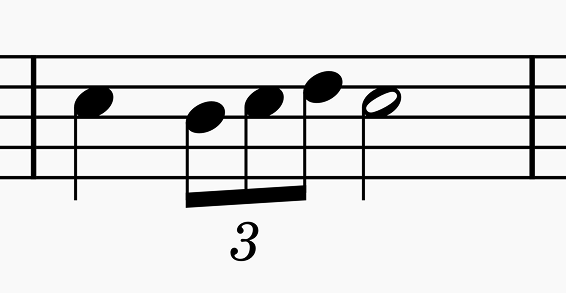
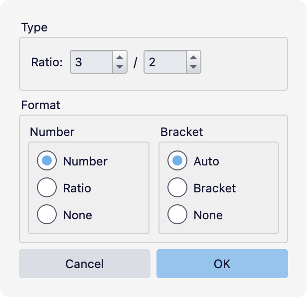
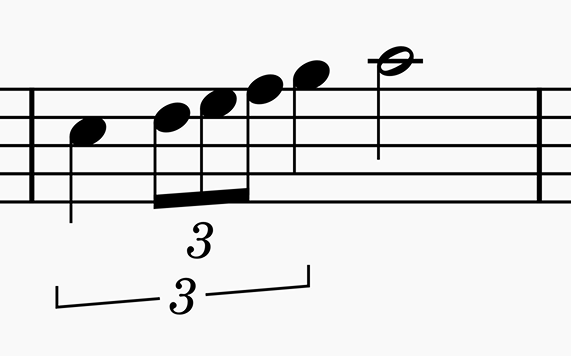
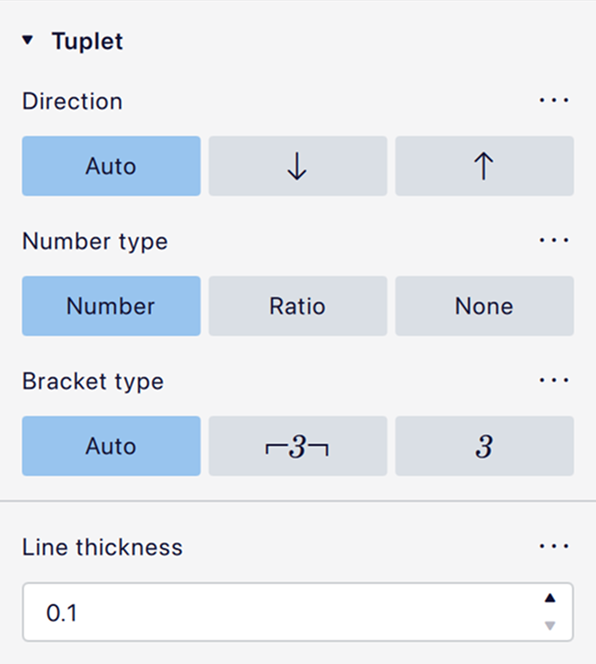
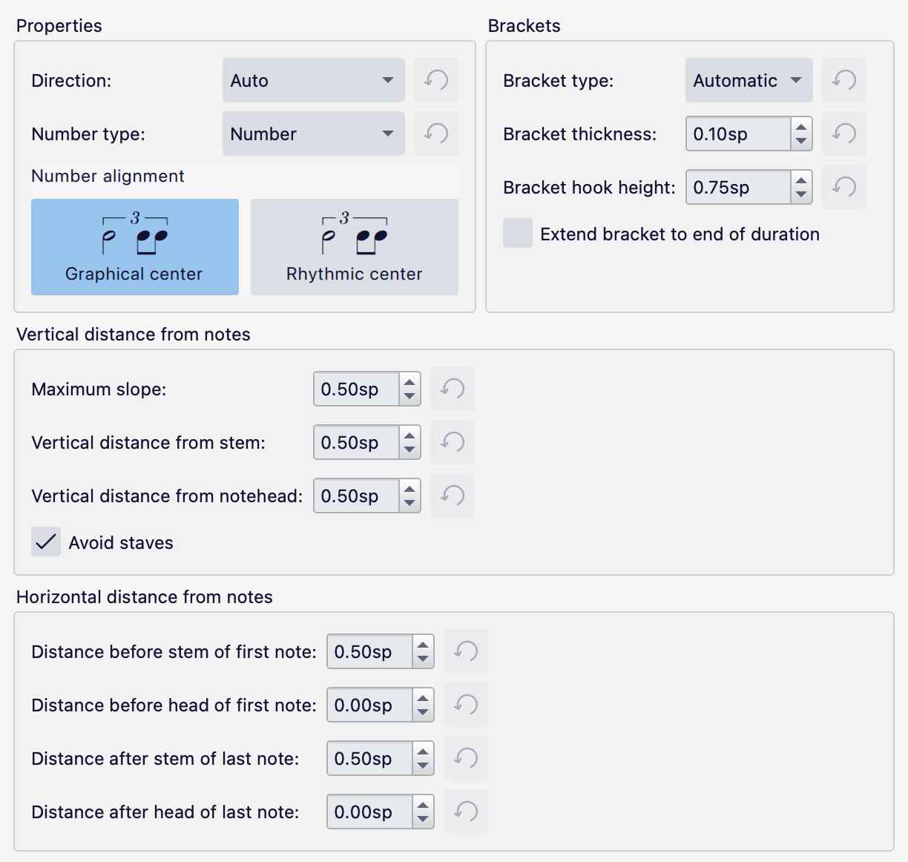
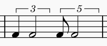
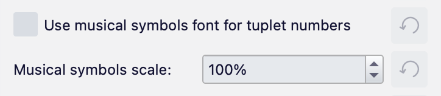

Tuplets
Creating tuplets
A tuplet is a division of a duration into a number of equal units. The eighth-note triplet (one quarter note divided into three) is perhaps the most familiar type of tuplet:

Simple tuplets
To create a simple tuplet, such as the one above:
- Select or navigate to a note or rest where you want the tuplet to begin.
- Specify the duration of the entire tuplet group, by clicking a duration in the top toolbar or pressing the appropriate keyboard shortcut (for example, press
5for a quarter note). - Specify the number of divisions (between 2 and 9) using one of these methods:
- The keyboard shortcuts
Ctrl+2–9. - Choose one of the options from the Add -> Tuplets menu.
- Click the tuplet icon on the top toolbar and choose an option from the dropdown.
The note or rest will be divided into the given number of units and you can continue entering notes as required.
If you need to input a series of tuplets, try this shortcut:
- Create the first tuplet.
- Select the entire first tuplet as a range selection.
- Press
R(repeat) as many times as required. Each press will create a new tuplet after the first one.
Custom tuplets
More complex tuplets can be created as follows:
- Select or navigate to a note or rest where you want the tuplet to begin.
- Specify the duration of the entire tuplet group, as described above.
- Open the Create tuplet dialog, either from the menu (Add -> Tuplets -> Other...) or by clicking the tuplet icon in the top toolbar and choosing Other... from the dropdown:

You can then define the properties of the tuplet via this dialog, and click OK to create it.
Nested tuplets
Tuplets can be nested within other tuplets:

To create a nested tuplet:
- Create the outer tuplet as described above.
- Select a note or rest within the tuplet, and create an inner tuplet in the same way.
Tuplets can be nested many layers deep, until the durations become too small to represent.
Tuplet properties
The appearance of a selected tuplet can be controlled in the Properties panel.

- Direction: Whether the tuplet appears above or below the staff; if left at Auto (the default), this will be determined by context.
- Number type: Whether to show just the number of divisions (e.g. '3'), the explicit ratio (e.g. '3:2'), or no number.
- Bracket type: Whether or not to show a bracket; if left at Auto, this will be determined by context.
- Line thickness: The thickness of the bracket.
Tuplet style
General settings for all tuplets in the score can be configured in Format -> Style -> Tuplets.

General styles
- Direction: Whether tuplets should appear above or below the staff.
- Auto: The direction is determined by context (which is closely connected to the stem direction of the notes under the tuplet, like with slurs).
- Up: Above the staff.
- Down: Below the staff.
- Number type: How to show tuplet numbers.
- Number: Just show the number of divisions (e.g. '3').
- Ratio: Show the explicit ratio (e.g. '3:2').
- None: Show no number.
- Number alignment: Where to place the number
- Graphical center: In the graphical center of the bracket
- Rhythmic center: Over the central rhythmic division of the tuplet (or in the case of an even number of divisions, between the middle two).
Brackets
- Bracket type: When to show a bracket over the tuplet.
- Automatic: A bracket is shown according to context (generally, no bracket is drawn if there is a continuous beam matching the length of the tuplet and connecting the first and last divisions).
- Bracket: Always show a bracket.
- None: Never show a bracket.
- Bracket thickness: The thickness of the line.
- Bracket hook height: The height of the vertical hooks at either end of the bracket.
- Extend bracket to end of duration: If unchecked, the bracket will end over the last note or rest inside the tuplet. If checked, the right end of the bracket will be extended to the position where the final division of the tuplet would appear, even if there is no explicit note or rest there. For example:

Distances
- Maximum slope: The maximum vertical distance between the left and right ends of the tuplet. If set to 0, all tuplet brackets will be horizontal.
- Avoid staves: If checked, all tuplet numbers and brackets will stay entirely outside of the stave. If unchecked, they will follow the noteheads, beams and stems more closely, even if they go into the stave.
The other options in this section should be self-explanatory. The horizontal distance settings all refer to the position of the ends of the tuplet brackets (the vertical hooks).
Text style
The text style of tuplet numbers can be configured in Format -> Style -> Text styles -> Tuplet.

This style has one additional option, Use musical symbols font for tuplet numbers. If checked, the tuplet number symbols from the music font (e.g. Leland) will be used instead of the specified text font, and their size can be controlled via the Musical symbols scale setting.